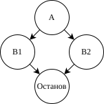
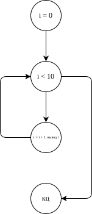

Порядок выполнения работы
- Узнать цель работы.
- Получить задание.
- Подготовить техническое и программное обеспечение.
- Внимательно ознакомиться с теоретическими сведениями и примером выполнения задания.
- Выполнить задание, одновременно подготавливая черновик отчёта.
- Оформить беловой вариант отчёта.
- Сдать работу преподавателю.
Цель работы
Научиться определять необходимое количество тестов.
Задание
Взять исходный код трёх подпрограмм (процедур, функций или методов), реализующих императивный подход к программированию. Каждая подпрограмма должна содержать не менее трёх любых операторов из следующего набора:
- условный оператор (
if), - оператор ветвления (
case…of,switch…caseи т. п.); - операторе цикла (
for,whileи т. п.).
Язык программирования — произвольный, но рекомендуются C, C#, C++, Java, JavaScript, PHP, Python.
- условный оператор (
Построить для каждой указанной подпрограммы граф потока управления (англ. control‑flow graph, CFG). Для построения рекомендуется использовать веб‑сервис app.diagrams.net (бывший draw.io).
По CFG вычислить цикломатическую сложность (число Мак‑Кейба) для каждой указанной подпрограммы.
Проверить значение, вычисленное на предыдущем шаге, посредством веб‑сервиса http://www.lizard.ws.
Определить необходимое (минимальное, но достаточное) количество тестовых вариантов для однократного выполнения каждого линейно независимого пути в каждой указанной подпрограмме.
Обязательное техническое и программное обеспечение
| Тип | Характеристика, наименование, версия |
|---|---|
| Браузер | Совместимый с HTML 5.2 и CSS Snapshot 2018 |
| Операционная система | Windows Vista и выше или Ubuntu 18.04 и выше |
| Текстовый процессор | Совместимый с OpenDocument v1.0 |
| Текстовый редактор | Совместимый с UTF‑8 без маркера порядка байтов (BOM) |
Для составления исходного кода рекомендуется использовать следующие текстовые редакторы: Visual Studio Code, Sublime Text. «Блокнот», поставляемый с операционной системой Windows, использовать нельзя!
Теоретические сведения
Определение
Цикломатическая сложность — предложенная Томасом Мак‑Кейбом метрика программного обеспечения, позволяющая оценить сложность (англ. complexity) программы как количество линейно независимых путей выполнения в исходном коде. Значение цикломатической сложности иногда называют числом Мак‑Кейба. Его можно вычислить для произвольного фрагмента исходного текста, в т. ч. для подпрограммы (процедуры, функции, метода) [1].
Значение для тестирования
Цикломатическая сложность обычно учитывается при тестировании базового пути. Тестирование базового пути, или структурированное тестирование (англ. strucrured testing), — также разработанный Т. Мак‑Кейбом метод проектирования контрольных примеров, предназначенных для тестирования программы методом белого ящика.
Тестирование базового пути гарантирует полное тестовое покрытие линейно независимых путей выполнения, то есть по крайней мере однократное выполнение каждого выражения в исходном коде, с использованием минимально достаточного количества тестовых вариантов.
Вычисление цикломатической сложности
Алгоритм вычисления цикломатической сложности требует проанализировать граф потока управления (англ. control‑flow graph, CFG), для которого характерны следующие элементы:
‑ вершины (узлы) — обозначают базовые блоки, последовательно выполняемые предложения;
‑ дуги (ориентированные рёбра) — отражают поток управления и, следовательно, соединяют вершины.
Вершины делятся на предикатные и операторные.
Предикатная вершина является началом двух и только двух дуг, так как обозначает конструкцию, определяющую последовательность выполнения в программе. Другими словами, предикатная вершина обозначает условие, используемое в условном операторе (if), операторе ветвления (case…of, switch…case и т. п.), операторе цикла (for, while и т. п.) и т. д. Оператор ветвления обозначается последовательностью предикатных вершин, а оператор цикла — предикатной вершиной, которая является не только началом двух дуг, но и концом как минимум одной дуги.
Операторная вершина не является началом ни одной дуги (см. ниже) или является началом только одной дуги, так как обозначает такой программный блок, который является последовательностью безусловных предложений; такая последовательность может содержать операторы присваивания, ввода, вывода и т. п., но не операторы условия.
Важное примечание: если подпрограмма пуста, то вход в неё обозначается операторной вершиной, которая не является концом ни одной дуги. В остальных случаях вход не обозначается.
Вершина, обозначающая выход из программы, является концом как минимум одной и как максимум бесконечного множества дуг, но, конечно же, не является началом ни одной дуги.
Формулы
Цикломатическая сложность \(C(G)\) вычисляется тремя способами:
- подсчёт количества регионов \(R\) (под регионом понимается область, ограниченная со всех сторон узлами и дугами; рабочая область должна засчитываться за отдельный регион!);
- по формуле \(C(G) = E - V + 2\), где \(E\) — количество дуг, \(V\) — количество узлов;
- по формуле \(C(G) = V_p + 1\), где \(V_p\) — количество предикатных узлов.
Оценка Complexity на веб‑сайте http://www.lizard.ws равна \(C(G)\).
Все способы дают одинаковые результаты, поэтому их можно (и нужно!) использовать для проверки.
Пример выполнения задания
Пример 1
На рисунке 1 представлен граф потока управления для программы, которая не содержит ничего, кроме пустого главного модуля:
int main()
{
return 0;
}Построим граф потока управления (CFG):
При построении были использованы элементы Circle («Круг») и Vertical elbow (стрелка «Вертикальный локоть») со вкладки Misc («Разное») веб‑сервиса app.diagrams.net. Для соединения одного элемента с другим его необходимо выделить и перетянуть одну из опорных точек на другой элемент так, чтобы тот был выделен цветом. Для сохранения диаграмм рекомендуется использовать «Google Диск», для экспорта — векторный графический формат SVG (File⏵Export as⏵SVG…).
Вычислим по графу цикломатическую сложность \(C(G)\):
- количество регионов \(R = 1\), \(C(G) = R = 1\);
- количество дуг \(E = 1\), количество узлов \(V = 2\), \(C(G) = E - V + 2 = 1 - 2 + 2 = 1\);
- количество предикатных узлов \(V_p = 0\), \(C(G) = V_p + 1 = 0 + 1 = 1\);
- оценка Complexity на http://www.lizard.ws: 1, \(C(G) = 1\).
Цикломатическая сложность \(C(G) = 1\). Для однократного выполнения каждого линейно независимого пути в рассматриваемом фрагменте исходного кода достаточно одного тестового варианта.
Пример 2
На рисунке 2 представлен граф потока управления для программы, которая содержит один условный оператор:
#include <iostream>
int main()
{
using namespace std;
bool a;
cin >> a;
if (a) {
cout << "B1" << endl;
} else {
cout << "B2" << endl;
}
return 0;
}Построим граф потока управления (CFG):

Вычислим по графу цикломатическую сложность \(C(G)\):
- количество регионов \(R = 2\), \(C(G) = R = 2\);
- количество дуг \(E = 4\), количество узлов \(V = 4\), \(C(G) = E - V + 2 = 4 - 4 + 2 = 2\);
- количество предикатных узлов \(V_p = 1\), \(C(G) = V_p + 1 = 1 + 1 = 2\);
- оценка Complexity на http://www.lizard.ws: 2, \(C(G) = 2\).
Цикломатическая сложность \(C(G) = 2\). Для однократного выполнения каждого линейно независимого пути в рассматриваемом фрагменте исходного кода достаточно двух тестовых вариантов.
Пример 3
На рисунке 3 представлен граф потока управления для программы, которая содержит один оператор цикла:
#include <iostream>
int main()
{
using namespace std;
for (int i = 0; i < 10; ++i) {
cout << i << endl;
}
return 0;
}Построим граф потока управления (CFG):

Вычислим по графу цикломатическую сложность \(C(G)\):
- количество регионов \(R = 2\), \(C(G) = R = 2\);
- количество дуг \(E = 4\), количество узлов \(V = 4\), \(C(G) = E - V + 2 = 4 - 4 + 2 = 2\);
- количество предикатных узлов \(V_p = 1\), \(C(G) = V_p + 1 = 1 + 1 = 2\);
- оценка Complexity на http://www.lizard.ws: 2, \(C(G) = 2\).
Цикломатическая сложность \(C(G) = 2\). Для однократного выполнения каждого линейно независимого пути в рассматриваемом фрагменте исходного кода достаточно двух тестовых вариантов.
Структура отчёта
Отчёт о выполнении работы должен содержать следующие разделы:
- постановка задачи;
- цель работы;
- аппаратные и программные средства;
- теоретические сведения;
- входные и выходные данные (по необходимости);
- тесты (по необходимости);
- исходный код;
- результаты работы.
Список использованных источников
1. Орлов С.А. Программная инженерия [Текст]. 5‑е изд. СПб. : Питер, 2016. 640 с. ISBN 978-5-496-01917-0.